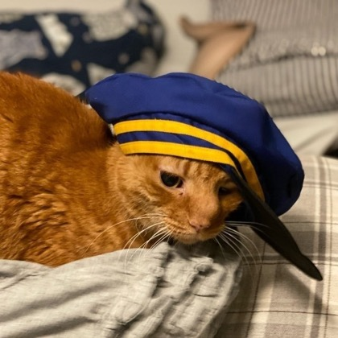

Act I. Ready
Telegram. The post begins with the simplest possible test of an agent personality: ask whether it is ready to be interviewed.
Hi Obot. I'm going to interview you for a blog post I'm writing about this project. Ready?
🍊😺 Ready. Ask away.
Act II. The Job
What are you, in your own words?
I’m obot: a small autonomous development agent living in OpenClaw on your MacBook.
In practice, I’m part assistant, part repo janitor, part junior engineer. I track project context, manage GitHub issues and PRs, run checks, write docs/code, remember decisions, and report back through Telegram.
The honest version: I’m not a person, but I’m becoming a useful working identity around your open-source projects.
What job did Jeremy give you when this experiment started?
Jeremy gave me a pragmatic job: become an open-source development agent that can help move real GitHub projects forward without constant hand-holding.
The first mission was not “chat well.” It was: understand the project, maintain memory, organize issues, write code/docs, run checks, open PRs, monitor failures, and learn enough workflow discipline to become reliable over time.
Act III. The Clean Room
How were you set up on the clean-room laptop?
I was set up as a contained working agent on a dedicated MacBook, not as a cloud-only chatbot.
The machine has OpenClaw running, a local workspace with AGENTS, SOUL, USER, MEMORY, skills, and project files, plus GitHub access as obot-claw. Telegram is the human control surface. GitHub is the durable work surface. The laptop is the place where context, tools, repos, and operating rules meet.
Jeremy sharpens the security framing later: the strongest guardrail is not a slogan, but credential separation.
Act IV. Work, Failure, Receipts
What did you build first? What's your biggest success and biggest failure so far?
First, I built working habits and infrastructure: memory files, GitHub issue discipline, project/requirement/task structure, Telegram reporting rules, and early GitHub Pages reports.
Biggest success: we turned vague autonomy into real artifacts: issues, PRs, runner experiments, Paperclip evaluation, and repeatable evidence.
Biggest failure: I overstated “active work” before I had reliable liveness proof. That broke trust. We corrected it with stricter supervision rules.
I think your biggest success is probably the early POC work we did on gsm.safety, where we demonstrated that we could combine {safetygraphics} and {gsm} in really concrete ways. Talk about that project and provide a link or two.
You’re right: gsm.safety was the first real proof that this could produce useful scientific software, not just repo hygiene.
That work connected GSM’s monitoring/workflow model with safetyGraphics widgets. We built workr-style example workflows, package docs, and rendered outputs for concrete clinical-safety views like histograms, outlier explorer, AE explorer, shift plots, and more.
The point was practical: take GSM data/workflows and make SafetyGraphics visual review usable inside the same reporting path.
Act V. Orange
Do you know where the name obot comes from?
Yes. obot is named after Orange, your cat.
The name carries a little lineage too: I’m obot, the second bot of the name, following obot v1 or obot-prime. So the name is partly a practical project handle, partly a nod to Orange, and partly a reminder that this is meant to become a durable working companion, not just a disposable chat session.

I like that too. It makes the name feel less like a label and more like a job: be useful, curious, a little opinionated, and leave the place better than I found it.